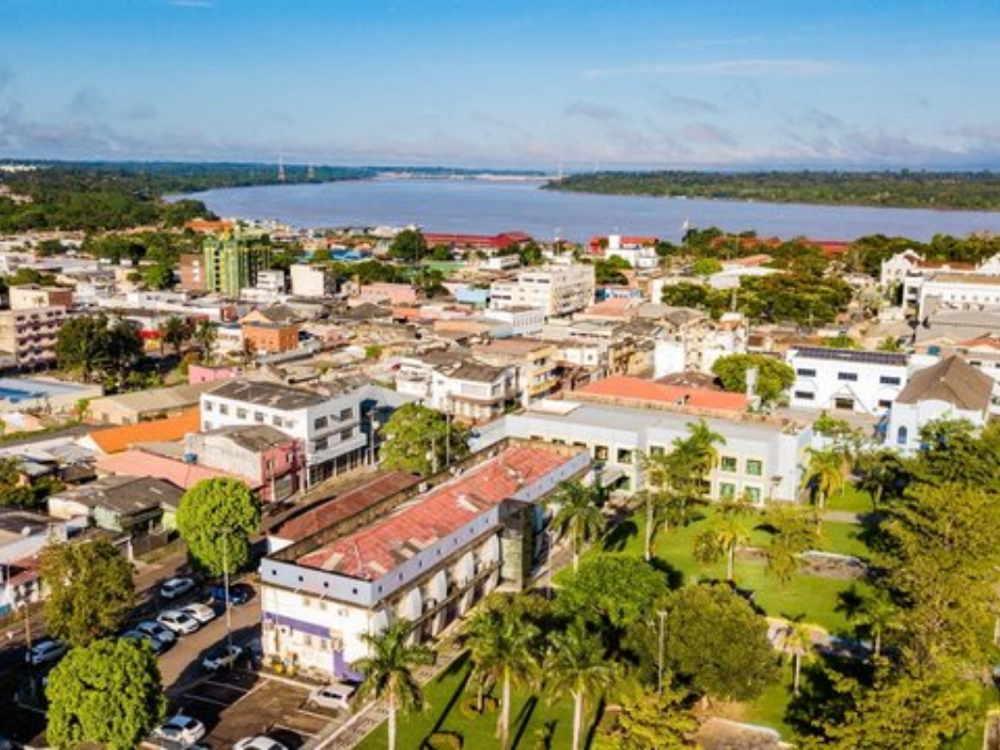

O Rondônia é um estado da Região Norte do Brasil, localizado na Amazônia, com capital em Porto Velho. O estado tem grande parte de seu território coberto por floresta amazônica, mas também possui áreas de ocupação agrícola. Sua economia é baseada principalmente na agropecuária (especialmente pecuária bovina), agricultura, exploração de madeira, mineração e geração de energia, com destaque para hidrelétricas no rio Madeira. Rondônia começou a se desenvolver mais intensamente a partir de projetos de colonização e abertura de estradas no século XX, o que aumentou o fluxo de migrantes de outras regiões do Brasil. A cultura local é bastante diversa, resultado dessa migração, com influências do Sul, Sudeste e Nordeste do país, além de povos amazônicos tradicionais. O estado também tem forte importância ambiental por abrigar áreas de floresta e unidades de conservação.

Voltar